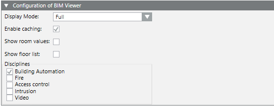
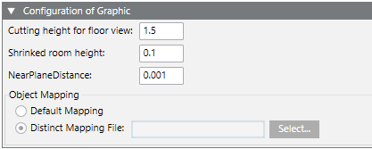

Set Configurations
Configuration Expander
- Click Settings
 .
. - The Configuration expander opens.
- In the Configuration BIM Viewer expander enter the following:
- Values for the BIM Viewer (see Configuration expander section for additional details).

- In the Graphic configuration expander, enter the following:

- Values for the BIM Viewer (see Configuration expander section for additional details).
- (Optional) In Object association, select Project association file to select the project-specific Modifying the Product Mapping Table.
- Click Save
 .
. - Click Settings .
- The Configuration expander closes.
Modify Product Mapping Table
The product mapping table (ProductMapping_HQ.csv) must be modified GMS to prevent a loss of data when updating Desigo CC.
- Select file [Project name]\libraries\BA_Software_Desigo_BIM_Viewer_HQ_1\AssociationRules\ProductMapping_HQ.csv.
- Create a copy of the file ProductMapping_HQ.csv.
- Rename the file copy ProductMapping.csv. It is not overwritten when updating a project.
- Edit the ProductMapping.csv file for the modification. Details on the content are available in Modifying the Product Mapping Table. The separator used for columns may need to be changed in Windows Regional settings > Time and region > Region > Number format under Additional settings.

You can manually merge a modified ProductMapping.csv with an updated ProductMapping_HQ.csv to make potentially new functions available (see Readme_for_Customizing.txt in your project library BA_Software_Desigo_BIM_Viewer_HQ_1).